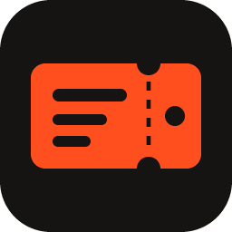

STUBТвой личный тикет-борд для работы с нейронками. Надиктуй задачу, и она уже на доске. Перетащи её в Claude, Codex или OpenCode, а STUB запомнит, кто её взял. Распознавание работает на твоём компьютере.
Your personal ticket board for working with AI. Dictate a task and it is on the board. Drag it into Claude, Codex or OpenCode, and STUB remembers who took it. Speech recognition runs on your own computer.
STUB-Setup.exe · примерно 125 МБ · бесплатно, лицензия MIT
Установщик без цифровой подписи: Windows может предупредить. Тогда «Подробнее» → «Выполнить в любом случае».
STUB-Setup.exe · about 125 MB · free, MIT license
The installer is not code-signed, so Windows may warn you. Choose “More info” → “Run anyway”.
«Системные настройки» → «Конфиденциальность и безопасность» → «Всё равно открыть». Если пишет, что приложение повреждено: xattr -cr /Applications/STUB.app
Сборка для Mac на Intel: скачать.
System Settings → Privacy & Security → “Open Anyway”. If it says the app is damaged: xattr -cr /Applications/STUB.app
Build for Intel Macs: download.
Сочетание клавиш работает из любой программы. Текст появляется сразу, его можно править прямо на ходу.
The shortcut works from any app. Text appears right away, and you can edit it as you speak.
Брось тикет на гнездо нейронки или утащи за край окна прямо в нужное приложение.
Drop the ticket on an app's socket, or drag it past the window's edge straight into the app.
STUB помнит, кто взял тикет, и переводит его в работу. Закончил — одна галочка, и он в «Готово».
STUB remembers who took the ticket and moves it to in progress. Finished? One tick and it is done.
Сессия закончила: тикет уходит в «Готово» со звуком. Нейронка ждёт ответа: на тикете красный сигнал.
Session finished: the ticket moves to Done with a chime. The AI needs an answer: the ticket shows a red signal.
Claude, Codex или OpenCode в папке проекта прямо в окне STUB. Тикет перетаскивается в терминал.
Claude, Codex or OpenCode in the project's folder, right inside STUB. Drag a ticket into the terminal.
Скачивай и обновляй модели распознавания прямо в приложении: от 23 МБ до 453 МБ.
Download and update speech models in the app, from 23 MB to 453 MB.
Звук обрабатывается локально и никуда не отправляется.
Audio is processed locally and is not sent anywhere.
У каждого проекта своя вкладка и своя доска.
Every project gets its own tab and board.
Ctrl+V скриншота прямо во время записи, и он уйдёт в нейронку вместе с текстом.
Ctrl+V a screenshot while recording, and it goes to the AI along with the text.
Остаток на 5 часов и на неделю у Claude и Codex и время до обновления.
What's left for 5 hours and the week on Claude and Codex, and time to reset.
Локальная база, история изменений, корзина и ежедневные копии.
A local database, change history, a trash and daily backups.
Нужна Windows или macOS. На Windows STUB обновляется сам, а модель распознавания скачивается в настройках при первом запуске.
Requires Windows or macOS. On Windows STUB updates itself, and you download a speech model in Settings on first launch.